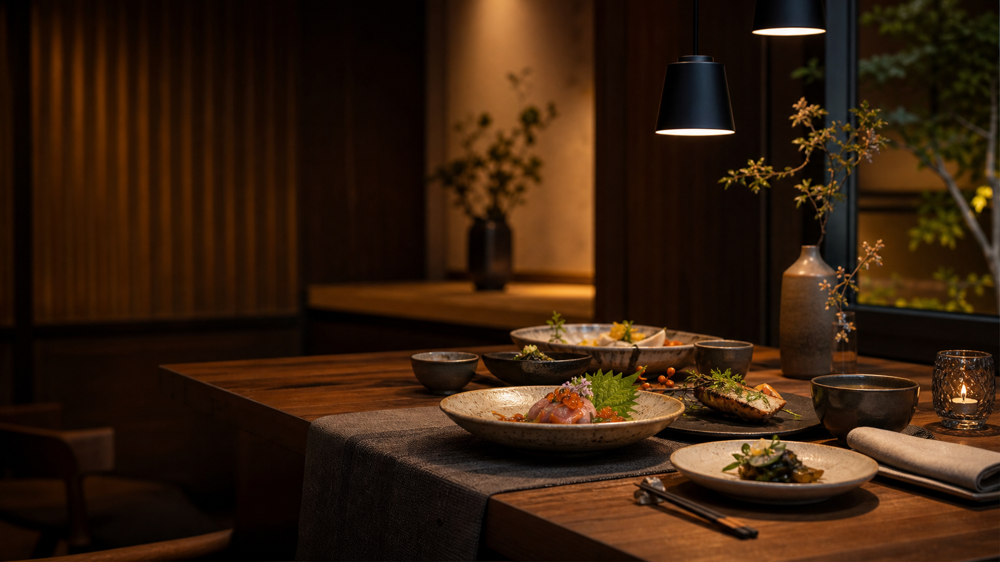

主力メニュー、季節料理、価格をスマホで読みやすく掲載。

電話、LINE、予約サイトへの導線をまとめます。
営業時間、定休日、住所、Googleマップを整理。
Occasion
来店シーンが見えると、予約の理由が生まれる。
飲食店サイトはメニューを並べるだけでは弱いです。記念日、週末ディナー、ランチ会、貸切相談など、利用目的ごとに選べる状態にします。
記念日ディナー
二人席、メッセージプレート、季節のコースをまとめて提案。
4,800円〜週末ディナー
空席状況とおすすめ時間を見せて、当日予約にもつなげます。
20:15 空席ありランチ会
主婦会、仕事の打ち合わせ、友人とのランチに使いやすい枠。
1,680円〜貸切相談
人数、予算、利用目的を先に伝えられる相談導線を用意。
8名〜相談可営業中20:15 空席あり
KITO 季節のディナーコース
前菜、季節料理、メイン、デザートまで。記念日や週末予約に。
4,800円
電話LINE予約地図
Mobile CTA
スマホで見た時に、予約ボタンが迷子にならない。
飲食店HPはスマホで見られる前提です。メニューから電話、LINE予約、地図へすぐ進める導線を用意します。
Concept
店の世界観を、予約の理由に変える。
お店の雰囲気だけで終わらせず、初めて来る人が「今日はここにしよう」と判断できる情報を整理します。コース、席、営業時間、地図、予約方法まで1画面の流れで確認できます。
Chef's Note
北海道の短い旬を、少しずつ皿に重ねる。
シェフの考えや店の個性を入れることで、価格ではなく体験で選ばれるHPにします。
Restaurant Tools
予約、テイクアウト、最新情報まで見える。
飲食店のHPは、見た目だけでは足りません。来店前に必要な判断材料と、予約・注文に進む導線を同じ流れで用意します。
席を予約する
テイクアウト注文
KITO 季節の弁当1,480円
道産前菜の盛り合わせ1,180円
余市ぶどうのソーダ680円
今週のお知らせ
週末限定コース、臨時休業、貸切案内などをトップページに出せます。
- 6/08 初夏のコース更新
- 6/14 貸切営業 18:00-21:00
Guest Voice
初めての人が安心して選べる情報を置く。
初来店の不安を減らす口コミ枠。
SNSから来た人の受け皿に。
電話前の確認コストを減らします。
Google Map
札幌市中央区南2条西3丁目 2F
地図埋め込み、駐車場案内、最寄り駅案内に差し替えできます。
Reserve
予約・店舗情報
- 営業時間
- 11:30-14:30 / 17:30-22:00
- 定休日
- 水曜日
- 予約方法
- 電話・LINE・予約サイト
- 対応内容
- 当日予約 / 貸切相談 / 記念日利用
Menu Price
来店前に選べる、わかりやすい価格設計。
飲食店のHPは、雰囲気だけでなく価格と利用シーンが見えることで予約につながります。ランチ、記念日、貸切まで一画面で比較できます。
平日ランチ
1,680円〜初回来店しやすい価格帯を見せる入口。
- 人気メニュー3品
- 営業時間と席情報
- 地図導線つき
記念日コース
4,800円〜予約単価を上げやすい主力プラン。
- コース内容
- メッセージ対応
- LINE予約誘導
貸切相談
8名〜相談宴会、会食、少人数貸切へ誘導。
- 人数目安
- 予算相談
- 電話CTA
Before Contact
写真が少なくても、予約される店に見せる準備まで。
飲食店は、料理写真の量よりも「今日行けるか」「いくらか」「どう予約するか」が先に見えることが大切です。公開前に差し替える情報と、予約につながる導線を最初から整理しています。
メニューと価格を迷わせない
ランチ、ディナー、季節メニュー、貸切相談を分けて掲載。写真が揃う前でも、名前・説明・価格で魅力を伝えられます。
予約方法を最短で見せる
電話、LINE、予約サイト、地図を来店前の流れで配置。スマホから見た人がそのまま行動できる構成です。
更新しやすい季節枠
おすすめ、空席情報、週末コースなどを差し替え前提で用意。公開後も新鮮な店に見える運用ができます。
Use This Template
この雰囲気で、店名と写真を差し替えて公開できます。
写真、メニュー、住所、営業時間、予約リンクを送れば、店舗用のHPとして整えます。